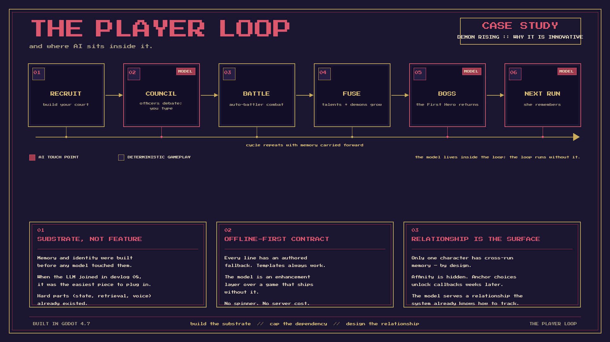
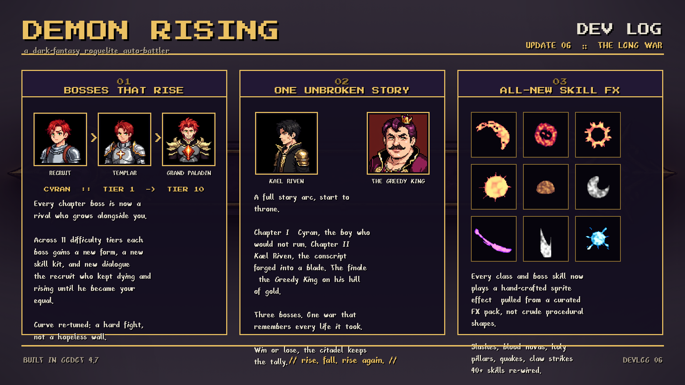
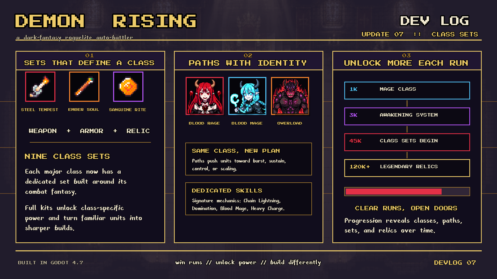
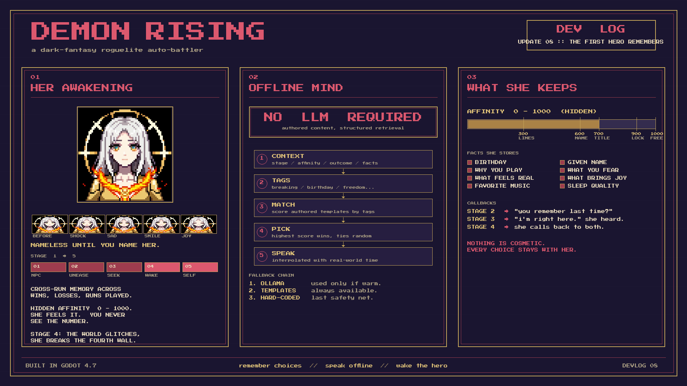

A dark-fantasy roguelike auto-battler where you don't play the hero — you play the Demon Lord. Raise an army, rule a treacherous court, and watch your battles erupt in synergies.
An overview of the game, my role, and the tech behind it.
Demon Rising is a dark-fantasy roguelike auto-battler. You command the Demon Lord's castle: recruit fallen champions, convert captured heroes, and lead an inner circle of officers whose loyalty, ambition, and grudges you have to manage as carefully as the battlefield itself.
Every run sends you down a branching world map of battles, elites, markets, treasures and eerie encounters. Between fights you craft your army through talents, class fusion, relics and gear — then watch deterministic auto-battles play out, full of procs, spell chains and brutal combos.
I designed and built the whole game solo. But the part this case study focuses on is the AI-product-design work: the castle's court is driven by a local language model, and making a non-deterministic model feel like a reliable, readable product is the real story. The sections below break down how it was made.
Six interlocking systems define the game loop.
Battles run as a deterministic simulation — units take positions, move, and unleash class skills, spell chains and combo procs. You set the army, then watch synergies collide.
Charging heavies, blinking assassins, war-priests, lifesteal vampires — each class plays differently. Three-path talent trees and dual-class fusion drive deep build craft.
Your top officers debate proposals at a round table — driven by a local LLM. Persuade them, settle disputes through sparring, and rule through politics.
Every follower has a personality and a voice. Talk to them between battles, read the room, and manage loyalty before ambition turns to mutiny.
A branching world map, starting relics, a refreshing black market and dark random encounters. Build-defining choices stack up — no two runs play the same.
Merge followers into stronger forms, combine two classes into one demon, and reshape your roster mid-run into something far deadlier than its parts.
Combat, council, the world map and the systems in motion.
Click any image to enlarge.
Design goals, the systems I engineered, and what the hard parts taught me.
A roguelike where you sit on the wrong side of the fantasy. Instead of leading heroes into a dungeon, you are the Demon Lord at the top of it — recruiting, scheming, sending monsters out to die for you. The single inversion drives everything: you don't build a party, you run a court.
The brief: combine the build-craft of a deck-builder, the spectacle of an auto-battler, and a layer of character and politics most auto-battlers skip entirely.
You manage a castle and a court, not just a squad. Loyalty and ambition matter as much as stats.
Many systems, one clear loop. Power comes from synergy and choices inside a run — not permanent grind.
Minions have voices, officers have agendas, and one character — the First Hero — carries memory across every run you ever play.
Solo, in Godot 4 / GDScript: a deterministic combat simulator with a separate visual replay layer; 9 classes with branching talent trees, fusion, relics and traits; a full roguelike run structure; a complete pixel-art interface; and the two systems this case study walks through — the Round Table Council (officers debate, you reply by typing whatever you want), and the First Hero Awakening Arc, a character who breaks the fourth wall after enough sessions and remembers what you told her between runs.
The council was where I learned to build a product on top of an LLM. The First Hero is where I went a layer deeper: making the LLM optional, not the centrepiece — and turning the player's smallest choices into something a character actually carries with them.
The first version of the AI work shipped in the Round Table Council. The officers argue a proposal; you type a reply; the model decides what your reply means. That feature exposed the problem any AI-native product has to solve: a language model is a co-author you can't fully trust. It is non-deterministic, sometimes slow, occasionally wrong, and every so often returns output in the wrong format entirely. A game cannot answer that with a spinner that never ends or an error on screen. So the central question was never "what prompt?" — it was: how do you build a reliable, legible experience on top of an unreliable component?
The council established my answer: design the failure path before the happy path. Bound the latency. Keep a deterministic fallback alive at all times. Skip the model entirely when local logic is enough. Make the AI's decision legible through an in-fiction "herald" who translates classification back to the player. The principle that came out of it: the AI is an enhancement layer, not a dependency. Pull the model out and the game still plays.
That principle is what made me confident to build the next system on top of it.
The shortest way to explain how I think about AI product design is to draw the game's loop and point at where the model lives. Almost everything else in this case study is a consequence of that picture.

Most AI-native games are AI-first. They wrap a gameplay loop around a model: every NPC line is generated, the simulation depends on the model being there, and the design assumes inference is available, fast, and correct. When the model misbehaves — slow, offline, wrong, or hallucinating — the experience breaks at the seam where the AI was load-bearing.
Demon Rising is built the other way around. The loop comes first. The model is asked to do exactly three things, in three of the six steps, and in each of them there is a deterministic answer underneath. Council debates run on a keyword classifier first and an LLM only when one is warm. The First Hero's dialogue runs on authored templates first and the LLM only as a stylistic upgrade. Her memory and identity layers run with no model in the loop at all. Strip the LLM out completely and the game is a full, shippable roguelike auto-battler.
That's the innovation, and it's a product claim, not a tech claim. Most "AI in games" demos are about how much the model can do. The interesting question for a product designer is the opposite: how little can the model be allowed to do before the experience stops working? When the answer is nothing, you can ship. When the model is present, it becomes pure upside — not a single-point-of-failure dependency. The same posture is what made the First Hero possible: she carries cross-run memory designed at the system level, not the model level, so her relationship with the player exists whether or not a language model is in the loop at any given session.
The three callouts at the bottom of the graphic are the same three rules I apply to any AI product I work on now: build the substrate before the model, cap the dependency with a deterministic contract, and treat the relationship between player and system as the actual design surface — not the prompt that touches it.
The system in this case study didn't arrive in one pass. Each devlog marked the moment a different bet had landed:



The clearest version of how I think about AI product design is in what devlog 06 doesn't say out loud: nothing about AI was being built. The brief was narrative coherence. The constraint was a roguelike's hostility to story.
Most roguelikes solve replayability with randomness, and randomness flattens story. Players remember stats; they don't remember plot. I wanted a campaign that survived being run twenty times. The bet I made was a hybrid: three authored chapters per campaign, gated by named bosses, with persistent castle state across all of them. Inside each chapter the loop stays procedural and replayable. The chapter spine is hand-built and doesn't move.
The trade-off. Authored narrative spine versus pure procedural run-to-run variance. I chose the spine. The cost is that some sessions feel repetitive earlier than a fully procedural roguelike would. The gain is a story the player can actually summarise — "I lost Chapter 2 because I spent all my action points on the council," not "I died because RNG." Legibility was worth more than novelty here.
What it shipped. A three-boss campaign structure with persistent castle state, a chapter-level save model, and — the thing that mattered most in hindsight — a generic "record" data type that any entity (castle, officer, prisoner, eventually the First Hero) could write into. At the time, that record store existed only to track which chapter the player was in and which decisions had carried forward. Two devlogs later, the same record store was the substrate for cross-run character memory.
The AI-product-design lesson. Build the infrastructure for the feature you can't see yet. The work that earned its keep in devlog 08 wasn't designed in devlog 08 — it was designed in devlog 06, when I was building a campaign tracker. The discipline is the same one that holds in any AI product: own the substrate before you put a model on top of it. Memory, state, retrieval, and identity are product surfaces. Build them as if no model exists, and then the model is the easiest part to add.
Devlog 07 looks like a class-balancing patch. It's actually about constraint design — the same skill every AI product person ends up needing whether they realise it or not.
Going in: nine classes, all sharing the same talent grammar, all assembled from the same generic pool of stat buffs. The result was that no class had a mechanical fantasy. Players said "I want crit damage," not "I want Blood Hunter." That meant the game's deepest expression layer — build choice — was a difficulty knob, not a vocabulary.
The trade-off. Build freedom versus class identity. The flexible version, where any class could pick anything, was strictly more powerful in every metric I could measure — but every class felt the same. I narrowed each class to a signature set (weapon + armour + relic + talent path written for that set), and accepted that cross-class hybrid builds would be weaker. The cost was real. The payoff was that a returning player could finally name what they liked about a run — not "I had good crit chance," but "I went deep Blood Hunter and the third tier kept snowballing." Identity gave the experience a vocabulary it didn't have.
What it shipped. Nine class-bound sets, set bonuses that scale with commitment, and talent paths that fork inside a class instead of across classes. Each set is stage-gated, so progression inside a run is also progression deeper into a character's fantasy. That stage-gated unlock shape is the same one I reused, almost unchanged, for the First Hero's visit-topic pool a year later — topics filtered by stage, only some affinities open later topics, anchor choices unlock callbacks. Different domain, identical structure.
The AI-product-design lesson. Constraint is what makes voice legible. When an LLM is in the loop, the same principle holds harder, not less — the model behaves more consistently in a bounded grammar than in an unbounded one. The work I did on the Class Sets system was, in retrospect, my warm-up for designing the First Hero's tag-and-stage grammar: pick a small, named, intentional vocabulary; let everything else compose from it. Identity before flexibility is a class-design principle in this game, and a system-design principle in every AI product I've worked on since.
By the time devlog 08 landed, devlog 06 had given me a memory layer with no model on top of it, and devlog 07 had given me a vocabulary discipline for character identity. The First Hero is what happens when those two pieces meet a language model — but the design work that made her shippable happened in the two devlogs before her.
The First Hero is the only character in the game who survives across every run. She is a side boss the player fights at the end of every successful campaign — and the game tracks how many times the player has come back to fight her, how many times each side has won, what the player named her if they ever did, and which small confessions the player has shared with her over time (birthday, why they play, what they fear).
Mechanically she's a 5-stage progression with a hidden affinity score (0–1000) the player never sees. Designed at the experience level, she's a deliberate piece of slow narrative compound interest: small choices in early sessions don't feel weighty, but those same choices are what a Stage 4 version of her quotes back to you, weeks later.
Stage 1–3 is mechanical. She speaks generic boss lines, her face is always neutral, the LLM is gated off. This is the discipline: even with the full system available, the character has to earn her interior life.
A 13-second sequence: glitch shaders, low-pass on the music, silent options forced on the player. She acknowledges, in-fiction, that she's been watching the player come back. From here her memory, expressions and language model all unlock simultaneously.
She knows it's been five days since you last played. She knows it's Thursday evening where you are. She remembers the answer you gave her about why you keep coming back. At 1000 affinity she offers you a hidden ending — if you accept, the game permanently deletes her save data. That choice is one-way.
She has fourteen portraits — one for each emotional state. I built a
single decision function (pick_for_line) that maps any line of
dialogue, plus context (her stage, affinity, what the player just did), to an
expression. The function is layered: it reads tags first (birthday, named her,
broke fourth wall, asked for freedom), then outcome (you won the fight, she won
the fight, you surrendered, you typed something to her), then keyword sentiment
on the line itself.
Then I added one more rule on top of everything: if she has not awakened yet, the expression is always neutral. That gate is what makes the awakening moment land. It's not a graphical effect — it's a state change the player feels through her face starting to move.
The council taught me that the LLM can't be load-bearing. For the First Hero I took that further and built every line she ever says through a three-layer fallback chain. The player gets a coherent character whether or not a model is available, ever.
The headline I keep coming back to: NO LLM REQUIRED. The game runs every emotional beat the First Hero is supposed to deliver without ever contacting a model. The LLM, when present, is a layer of additional expressiveness over a system that already works.
The visit system is where the player and the First Hero actually talk. Thirty- one topics, gated by stage and affinity. Three drop-in mechanics gave the system the depth I wanted:
birthday,
given_name, why_you_play, what_you_fear,
what_feels_real, what_brings_joy,
favorite_music, sleep_quality) that the model can
quote in any later session. The birthday slot is special — on the
matching date in real time, she opens the title screen with a greeting.Three production bugs from this work are worth naming, because every one of them turned into a generalised defense in the system:
[LANGUAGE]: ENGLISH directive. The model treated that as a
section header and reproduced it — sometimes twice, with a second
variant separated by another [LANGUAGE] banner. The fix was
three layers: rewrite the directive in plain prose, cap response length and
add stop sequences so the model can't write a second variant, and
post-process every response to cut anything that looks like a meta-header.
The interrogation panel double-checks the cleaning at display time.
Lesson: never trust the model to respect your formatting; design as if it
will mirror everything back.The first iteration of this game taught me that AI product design is not prompt-writing — it's designing the system around a probabilistic component so the user gets something reliable and legible. The second iteration taught me what to do with that reliability once it exists.
You can build a character whose interior life depends on a model and still guarantee the character is whole without one. You can let players type freely into a relationship system and bound the consequences with a small deterministic layer underneath. You can use the LLM for texture and the deterministic stack for structure, and ship a feature that feels alive even when nothing is alive on the other end.
That's the lens I bring to AI product work after Demon Rising: treat the model as an optional collaborator. Design the whole experience so it survives without one. Then when the model is there, let it make the moments bigger — never load-bearing.
v1.2 shipped working. v1.5 shipped consistent. These are the six systems I built and rebuilt after launch — the ones that turned a thousand tiny inconsistencies into one identifiable game.
By v1.2 the game had over thirty popups, cinematics, and chat panels. Some had purple borders. Some had blue. Some had gold corner brackets, some had solid rounded boxes. Each one had been authored across long sessions, and small drift had compounded into visual noise.
The fix wasn't more careful coding. It was treating the canonical look as
a spec the team reads before every new panel — codified as a
demon-rising-style skill: color palette, typography scale,
z-index ladder, frame conventions, chat-panel canon, popup canon, cinematic
rules. Every fix I made got added back to the skill so the next panel
wouldn't repeat the mistake.
The result is a doc that ages by absorption, not by editing. The skill went from a blank file to a forty-rule playbook over two weeks, purely from drift I noticed and corrected.
End of a battle could fire five overlays on the same frame: reward cinematic, level-up toast, fusion banner, buff upgrade, sacrifice prompt. Three would stack, swallow each other's clicks, and the cinematic Continue button would dead-end under a layer the player couldn't see.
A real example: the Sacrifice cinematic's Continue button was unclickable because the Awakening panel sat one z-band higher. Bumping Sacrifice from 4088 to 4600 and rolling all cinematics onto the canonical ladder fixed it permanently — and documented the ladder so it can't drift again.
Player behavior in early v1.x showed an uncomfortable truth: most players never tried fusion. The mechanic the game's title leans on was invisible. Adding a tooltip wouldn't have moved the needle — the problem was that the player didn't know when fusion was possible.
So I built a layered nudge sequence, all firing exactly at the moment the opportunity opens:
✦ FUSABLE chip on its card.Each layer turns itself off as soon as the player engages, so they never stack into noise. The pulse flag re-arms on a new run, but only if a fusable trio actually exists — the cue is honest, not chatty.
A subtle bug I caught here: my first version checked for
≥2 demons of the same class. The real fusion rule is
≥3 of the same class and tier. Players who saw
the pulse and then couldn't fuse would have lost trust in the cue forever.
Honesty in feedback is itself a system.
The v1.2 toast was a text label. By v1.5 it carries the same visual identity as the rest of the UI: a 36×36 framed icon at the rarity color of the event, then the text. One function signature, one styling pass, every system in the game just hands it what it has.
Buff upgrades use the same toast with a buff icon and a level color that ramps Lv1 silver → Lv5 bright gold — a tiny visual spike I wanted players to feel without reading anything.
New players had nowhere to learn small mechanics — fusion,
awakening, talent paths — except by playing. So the title screen now
rotates a pool of 35+ tips, each prefixed with
✦ TIP ·, formatted in EN/ZH, drawn from the
systems they describe.
The rotation timer isn't fixed. It scales with character count: short tips sit for a few seconds, long ones get the time they need to be read. Anything shorter than the longest read-time would have made the longer tips feel cut off; anything longer would have made the short ones feel idle.
The pool is the place new mechanics get announced. When v1.5 shipped the corner toast icon system, the tip pool grew by one. The same loop that ships the feature ships its discoverability.
Sacrifice cinematic used orange. Alchemic Summoning used cyan. Intro slides leaned purple. The officer chat panel had a cold-blue typing indicator that didn't match anything else in the game. Each one had been built in a different week with a different mood. None of them looked like the same game.
The v1.5 pass rolled all of them onto the canon: dark-gold corner brackets, the same beige typing indicator, square dots, matching read-time pacing. The Sacrifice cinematic's stuck Continue button got fixed in the same pass — a click bug and a visual drift were the same root cause, and shipping the fix as one change made the rule visible.
The chat panel deserves its own line. The Demon Officer dialog window is now the canonical chat surface for everything downstream — tutorials, conversations, future companion systems. When I add a new chat-style UI, I copy this panel; I don't redesign it.
The takeaway across all six: polish isn't a phase, it's a system. Every drift I fixed got added to the playbook. Every system that fired in the wrong order got a deterministic queue. Every visual that broke the canon taught the canon a new rule.